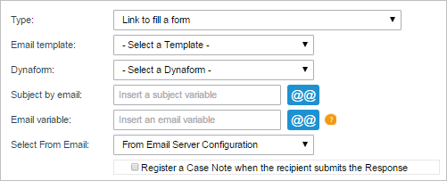
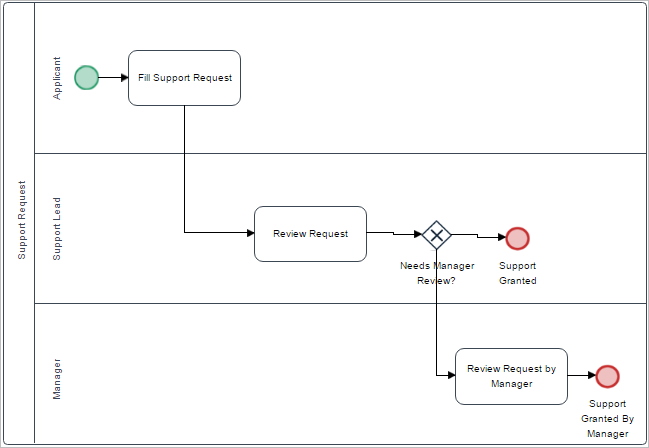
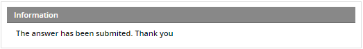
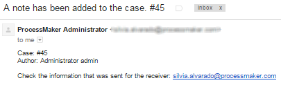
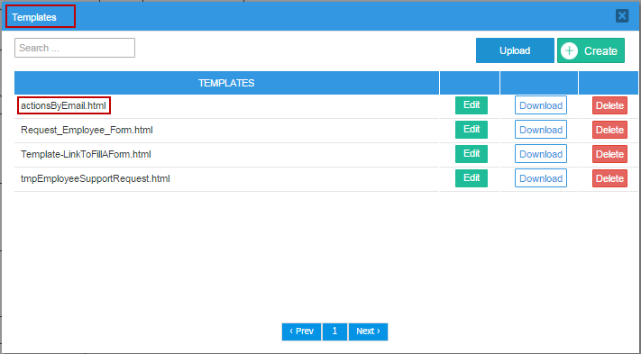
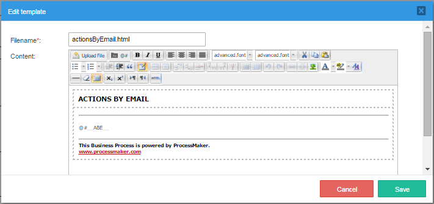
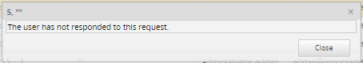

Overview
Actions by Email is a feature available on ProcessMaker Enterprise Edition. This feature allows users to receive an email where they can send information to ProcessMaker cases and also route those cases onto the next task in the process. The email can contain a link to a form stored on the ProcessMaker server to be filled out and submitted, a group of links which can be clicked to accept or reject information in the email, or multiple different options customized by the designer. Actions by Email was originally created to allow people - who are not registered users in ProcessMaker -to work on cases, but it can also be used by registered users who wish to work on cases without having to log into the ProcessMaker interface.
Actions by Email used to be an Enterprise Plugin, but currently it is an integrated feature available in ProcessMaker Enterprise Edition 3.0 and later.
It comprises three options:
- Link to fill a form: A link to a form is sent to the user's email. When the user submits the form, it saves any data entered into the form and routes the case to the next task in the process.
- Use a field to generate actions links: The user will be able to approve or reject the information sent via email. It routes the case onto the next task depending on the link which the user clicked in the email.
- Custom actions: This option gives designers the ability to add and customize the response options sent to users in the email by adding
csscode to each of these options.
Note: If working with both BPMN and classic processes, make sure that the license provided includes information of the feature as well as information of the plugin.
How the feature works
Actions by Email adds a new tab in the task properties to configure an email sent to the user. This feature allows sending email on the following cases:
- By sending an email to the user's mail where the information of the Dynaform will be filled. This user should not be necessarily the system user.
- By sending a field or fields as a link to the user's mail in order to approve or reject the information.
- By sending one or more customized options (note that these options are customized by using
csscode to highlight them).
In the cases above the information will be recovered allowing to continue the case.
Note: Actions by Email does NOT work with tasks which have self service and self service value based assignment routing rules because the task needs to be routed to a specific user in ProcessMaker.
Note: Take into account that the configuration of Actions By Email must be done only from the second task of the process.
Note: The email sent by Actions by Email is resent when the case is unpaused, reassigned or uncancelled.
Restrictions
Please consider the following restrictions before using the Actions by Email feature:
- As a best practice, do not configure the current task to use Actions by Email, and then route cases of this task from the email to tasks that require manual assignment. This will cause errors in case run time because there is no way in the email to manually select a user in which to assign the task.
- As a best practice, do not configure a task to use manual timing control if that task requires Action by Email. If you do so, process users cannot change the task duration time during run time.
Requirements
- ProcessMaker Enterprise version 3.0.0.5 or higher with a proper license .
Supported Stacks
- See this documentation to view the server configurations which are supported.
Browser Requirements
- See this documentation to view the browsers which are supported.
Installation and Configuration
Install the Feature in ProcessMaker
ProcessMaker Enterprise version 3.0 and later automatically includes the Actions by Email feature after the Enterprise license is activated. To check whether the Actions by Email feature is available, login to ProcessMaker as a user such as "admin" who has the PM_SETUP_ADVANCE permission in his/her role. Then, go to Admin > Plugins > Enterprise Manager and click on the Enterprise Features tab to see the list of available features.

Note: In ProcessMaker 3, this feature must be enabled to work with it inside the processes. Use the Actions by Email plugin to work only with the old processes. The plugin is not functional for new processes.
Configuring the Actions by Email Properties
To use Actions by Email, open a process for editing and go to the task which will be routed via email. Right click on the task and select Properties task context menu. Select the Actions by Email tab to configure the email that will be sent to the user:

To configure the actions sent by email, select the Type of email that will be sent to the user:

Read the following sections to learn how to work with each one of these options.
Link to Fill a Form
In this option, the email sent to the user will contain a link which will redirect to the Dynaform assigned to the task, located on the ProcessMaker server. When the user fills out the form and clicks on the submit button, any data entered in the form will be saved to the case. For this, the following fields must be completed:

The fields to be filled for both options are the following:
- Email Template: Select the template file which will be used as the content of the email. Actions By Email includes a default template file named actionsByEmail.html which can be used for testing purposes. To learn how to create an email template, see this documentation.
- Dynaform: Select one of the Dynaforms already created in the project where the information will be filled when the user sends the data.
- Subject by Email. Enter the text of the email's subject line. This text can include a custom variable whose content will be inserted in the subject. This variable can come from a previous Dynaform field or be created in a trigger.
- Email Variable. Either enter the email address of the person who will receive the email or select a variable which will hold the recipient's email address. If this field is left blank, the next assigned user's email will be used by default.
- Select From Email: Select the email address from which the email will be sent to the user. The options are:
- From email server configuration: The email will be sent from the user set by default in the configuration of the Email Accounts in ProcessMaker.
Note: If an Actions by Email step occurs after a script Task, then the log will not show any user because a user did not run the Actions by Email step.
- From current user: The email will be sent from the user assigned in the current task.
Note: This field is available from version 3.0.1.5.
- From email server configuration: The email will be sent from the user set by default in the configuration of the Email Accounts in ProcessMaker.
Finally, click on the Save button to save or modify the configuration.
Example - Link to Fill a Form
In the following process, the Support Lead must review a request sent by an Applicant. This request will be sent via email.

Create a Dynaform named "Review Request" that include following fields and their respective variables:
| Field | Variable |
|---|---|
| Applicant Name - Textbox | APPLICANT_NAME - String |
| Decision - Dropdown with two options (Approve/Reject) | REVIEW_STATUS - String |
Don't forget to assign the variables to each Dynaform field.
Two variables will be used to set the user's email address and the email's subject: "APPLICANT_EMAIL" and "SUBJECT_EMAIL " (both strings). Now, create the following trigger which defines the two variables holding this information.
//lookup the user assigned to the next task in the case:
$query = "SELECT USR_UID FROM APP_DELEGATION WHERE APP_UID='$caseId' AND
DEL_INDEX=(SELECT MAX(DEL_INDEX) FROM APP_DELEGATION WHERE APP_UID='$caseId')";
$result = executeQuery($query);
$aUser = userInfo($result[1]['USR_UID']);
@@APPLICANT_EMAIL = $aUser['mail'];
//lookup the case number:
$result = executeQuery("select APP_NUMBER from APPLICATION where APP_UID='$caseId'");
@@SUBJECT_EMAIL = "The request number: {$result[1]['APP_NUMBER']} needs to be reviewed";
This trigger needs to be set to fire after routing of the previous task (i.e., the task before the task set to use Actions by Email).
Note: Triggers assigned before and after a Dynaform will not be executed in Link to Fill a Form. This because those triggers are assigned to Steps and not to Dynaforms.
Since the Support Lead will receive the form via email, the Actions by Email must be configured in the "Review Request" task. Right click on that task, go to Properties then Actions by Email tab and fill the information:

Where:
- Dynaform. Choose the "Review Request" Dynaform.
- Subject by Email. Choose the @@SUBJECT_EMAIL variable created in the trigger.
- Email Variable. Choose the @@APPLICANT_EMAIL variable created in the trigger.
Save the changes and execute a case. When the Applicant sends the information to the Support Lead, this last user will receive the following email notification:

Don't forget that the template can be fully customized. Read this section in order to know how to customize the actions by email template.
Click on Please complete this form link and the Dynaform created previously will appear:

Fill out the form and click on Submit, and the information send will be confirmed with the following message:

The case will be routed to the next task, which in this example is the Review Request by Manager task.
Using a Field to Generate Actions Links
This option generates a select link in the link according to the field chosen. The options to be filled in this option are the following:

The fields to be filled for both options are the following:
- Email Template: Select the template file which will be used as the content of the email. Actions By Email includes a default template file named actionsByEmail.html which can be used for testing purposes. To learn how to create an email template, see this documentation.
- Dynaform: Select one of the Dynaforms already created in the project where the information will be filled when the user sends the data.
- Subject by Email. Enter the text of the email's subject line. This text can include a custom variable whose content will be inserted in the subject. This variable can come from a previous Dynaform field or be created in a trigger.
- Email Variable. Either enter the email address of the person who will receive the email or select a variable which will hold the recipient's email address. If this field is left blank, the next assigned user's email will be used by default.
- Variable Sent in Email: This option is available only if the option Use a field to generate actions link is selected. Select the variable that will be sent on the email and that will hold the value of the option selected by the user in the email. It only works for the following fields: dropdown, radiogroup and checkbox.
- Select From Email: Select the email address from which the email will be sent to the user. The options are:
- From email server configuration: The email will be sent from the user set by default in the configuration of the Email Accounts in ProcessMaker.
Note: If an Actions by Email step occurs after a script Task, then the log will not show any user because a user did not run the Actions by Email step.
- From current user: The email will be sent from the user assigned in the current task.
Note: This field is available from version 3.0.1.5
- From email server configuration: The email will be sent from the user set by default in the configuration of the Email Accounts in ProcessMaker.
- Register a Case Note when the recipient submit the Response: If this option is checked, a case note is added when the Dynaform is submitted.
Finally, click on the Save button to save or modify the configuration.
Example - Using a field to generate action links
Let's take the following process to exemplify this option.
Let's create the first Dynaform, where the employee will fill his or her request to submit it for review
| Dynaform: Employee Support Request Form | ||
|---|---|---|
| Field Type | Field Label | Related Variable |
| title | Employee Request Form | - |
| subtitle | Fill the following information | - |
| text | Employee Name | empName |
| text | Employee Last Name | empLastName |
| textarea | Request Details | reqDetails |
| submit | Submit | - |
The Dynaform should look like the following:

Assign this Dynaform to the first task in the process: "Fill support request"
Now, create a second Dynaform called "Review Supervisor Request". Import and export the first Dynaform to this new Dynaform and add the following field before the "Submit" button.
| Dynaform: Review Supervisor Request | ||
|---|---|---|
| Field Type | Field Label | Related Variable |
| title | Employee Request Form | - |
| subtitle | Fill the following information | - |
| text | Employee Name | empName |
| text | Employee Last Name | empLastName |
| textarea | Request Details | reqDetails |
| dropdown | Approve? | dropApprovedRejected (Options: "Approve", "Reject") |
| submit | Submit | - |
The email sent to the Supervisor to review the employee request will be based on this second Dynaform which should look like the following:

Continue by creating a new template called "tmpEmployeeSupportRequest" and add the following code in the body of the template (using the HTML editor):
<p><b>Applicant Name:</b> @@empName @@empLastName</p>
<p><b>Request Details:</b> @@reqDetails</p>
<p></p>
<p><strong>@#__ABE__</strong></p>
Do not forget to add the @#__ABE__ variable in the template. This variable allows adding the response options in the email. Now, configure the second task so this request is sent to the supervisor's email giving him or her the ability to approve or reject the request.

To fill the "@@SUBJECT_EMAIL" and "@@APPLICANT_EMAIL" variables, create a new trigger called "Fill Email Variables" with the following code:
//lookup the user assigned to the next task in the case:
$query = "SELECT USR_UID FROM APP_DELEGATION WHERE APP_UID='$caseId' AND DEL_INDEX=(SELECT MAX(DEL_INDEX) FROM APP_DELEGATION WHERE APP_UID='$caseId')";
$result = executeQuery($query);
$aUser = userInfo($result[1]['USR_UID']);
@@APPLICANT_EMAIL = $aUser['mail'];
//lookup the case number:
$result = executeQuery("select APP_NUMBER from APPLICATION where APP_UID='$caseId'");
@@SUBJECT_EMAIL = "The request number: {$result[1]['APP_NUMBER']} needs to be reviewed";
Assign this trigger in the first task "Before Assignment".
Also, configure the exclusive gateway using the "dropApprovedRejected" variable sent in the mail to store the supervisor's response and decide whether the request is rejected (the flow will go the the end event) or approved (the flow will go to the "Review request by manager" task). Right click on the gateway and add the following conditions:
"Review request by manager" -> @@dropApprovedRejected == "Reject"
Save the changes and execute a case. When the Employeesends the information to the Support Lead, this last user will receive the following email notification:

Notice that the content of the email sent is the content set in the template configured in the Actions by Email option of the task. Nevertheless, if the variable that includes the action links (which in this case are the options of the dropdown) is not included in the Dynaform, these options won't be sent in the email.
Users who receive the email can use these action links to submit their response directly from the email. In case of this example, the supervisor will approve the request by clicking on "Approve"

After clicking on one of the options, the case is routed to the next task (in case of the process the response is also evaluated by the gateway). The following message is shown to the user.

And, a set in the configuration, a case note is also added in the case.

Custom Actions
Available on: ProcessMaker 3.0.1.7 on
This option gives designers the ability to add and customize the response options sent to users by adding css code to each of these options. These options are added at the end of the email template to be sent and makes it easier for users to select only one choice. When selecting this option in the configuration of the Actions by Email, the following window is shown:

The information to be completed is the following:
- Select From Email: Select the email address from which the email will be sent to the user. The options are:
- From email server configuration: The email will be sent from the user set by default in the configuration of the Email Accounts in ProcessMaker.
Note: If an Actions by Email step occurs after a script Task, then the log will not show any user because a user did not run the Actions by Email step.
- From current user: The email will be sent from the user assigned in the current task.
- From email server configuration: The email will be sent from the user set by default in the configuration of the Email Accounts in ProcessMaker.
- Email Variable: Either enter the email address of the person who will receive the email or select a variable which will hold the recipient's email address. If this field is left blank, the next assigned user's email will be used by default.
- Subject by Email: Enter the text of the email's subject line. This text can include a custom variable whose content will be inserted in the subject. This variable can come from a previous Dynaform field or be created in a trigger.
- Email Template: Select the template file which will be used as the content of the email. Actions By Email includes a default template file named
actionsByEmail.htmlwhich can be used for testing purposes. To learn how to create an email template, see this documentation. - Store Result in: Select the case variable where the value of the option selected by the user will be stored.
Options: Add in this section the options that will be sent in the email to the users who will receive it, and select just one of them. Each options added must have its value (which will be stored in the variable selected previously once the users selects one options and sends the response), the label with which each option will be shown to the user and finally, each option can have customized css code so it is easier for users to identify each option in the email. For example:

Example - Custom Actions
Let's take the example described before in which the supervisor whether approves or rejects the request of the employee in this section.
This was the email received by the supervisor with the action links:
Let's use the custom actions to highlight the response actions making the "Approve" button green and the "Reject" button red. To do this, let's use the following css code for the green "Approve" button
background-image: -webkit-linear-gradient(top, #096309, #08752b);
background-image: -moz-linear-gradient(top, #096309, #08752b);
background-image: -ms-linear-gradient(top, #096309, #08752b);
background-image: -o-linear-gradient(top, #096309, #08752b);
background-image: linear-gradient(to bottom, #096309, #08752b);
-webkit-border-radius: 28;
-moz-border-radius: 28;
border-radius: 28px;
font-family: Georgia;
color: #ffffff;
font-size: 20px;
padding: 10px 20px 10px 20px;
text-decoration: none;
And let's use the following css code for the red "Reject" button.
background-image: -webkit-linear-gradient(top, #eb0505, #b82b2b);
background-image: -moz-linear-gradient(top, #eb0505, #b82b2b);
background-image: -ms-linear-gradient(top, #eb0505, #b82b2b);
background-image: -o-linear-gradient(top, #eb0505, #b82b2b);
background-image: linear-gradient(to bottom, #eb0505, #b82b2b);
-webkit-border-radius: 28;
-moz-border-radius: 28;
border-radius: 28px;
font-family: Georgia;
color: #ffffff;
font-size: 20px;
padding: 10px 20px 10px 20px;
text-decoration: none;
Now, using those code lines, configure the Actions by Email property of the "Review Request" task like the following.

Use the same trigger and Dynaforms in the process, only the configuration will change for this example. Run a case of this process. The following is the email received by the supervisor using the options provided in the configuration.

The supervisor is now capable of sending the response using these buttons as in the previous case.
Customizing the actionsByEmail.html template
It is possible to customize the template by adding case variables and additional information related with the Dynaform, process, case, etc. In order to find out the actionsByEmail.html template go to Templates option, the template will be listed:

Click on Edit and the following structure will appear:

This template is characterized by having the @#__ABE__ variable where all the information related to the Actions by Email is stored. It is mandatory to keep this variable even if a new template is created.
Modify its html using Dynaform variables, the template will look something like:

When the process where the actions by email is configured, is executed, the user will receive the following custom email:

Actions by Email Log
Note: This option is not shown in last versions of ProcessMaker. It is only shown when the Actions by Email plugin is enabled. This is a Known Issue that will be solved in next versions. Thank you for your understanding.
When a case is executed, after configuring the Actions By Email options, all messages sent will be registered on the Actions by Email Log. This is very useful to have a register of which messages were send or which weren't. Login to ProcessMaker with a user such as the "admin", who has the PM_SETUP permission in his/her role. Then, go to ADMIN > Plugins and click on Actions by Email option:

A list with emails sent will display as follows:

Where:
- Resend Email: By selecting an email from the list and clicking on this button at the top left-hand side of the list, the email will be resent. If the task is closed the following message will display:

- Date: it's the date on which the email was sent.
- Case Number: it's the case number in which the message was sent.
- Subject: it will display the subject of the email.
- From: email address from which the email was sent.
- To: user who receives the email.
- Sent: state of the email. If it was sent state will be SENT on the contrary it will display an ERROR status.
- Answered: if the message is answered, in other words, whether the form is filled or clicked on the link options, on this row the message will be YES on the contrary, if the email is not answered, the message will be NO.
- View Response: by clicking on the icon, the email answered will open in a new window, with the fields which were filled during the process. This have a relation with the field Answered if in that field the Answer is YES, the window will display the message that will be the form filled or the link option.
However, if the answer on the Answered field is NO, the window will display the following message:

- Message: if any error occurs while it is sending a message, it will be described on this row.